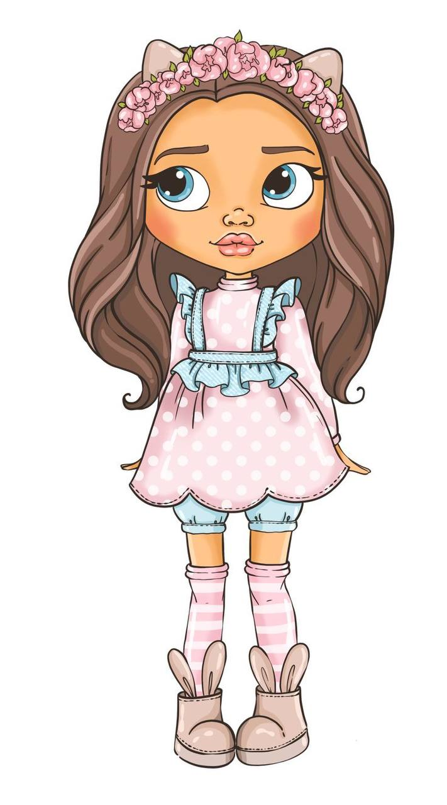

Моє дитинство.

Якщо коротко, то було весело...
Пам`ятаю себе починаючи із садочка. Я, мій брат, мама і тато жили у
бабусі і дідуся - батьків тата, а їх будинок був поруч садочка. В
дитинстві я почувала себе дуже вродливою, у мене було темне, довге та
хвилясте волоння, сірі очі та курносий носик. Думаю через це мене
любили всі виховательки, я відчувала від них більше уваги та тепла,
ніж вони проявляли до інших. Також, яскраво пам`ятаю вечори, які я
проводила із дідусем, особливо влітку. Ми часто з ним ввечері гуляли
садом та поміж великої кількості різних квітів, які насадила бабуся,
як же вони солодко пахли. Дідусь розповідав мені цікаві факти про
світ, про цей великий світ, який ще в мене по-переду. А, ще друзі, їх
теж було багато, у сусідньому дворі, нас постійно сварили бабусі за
галас, за ігри з м`ячем, палками, раніше були такі ігри...
Я - підліток.
Якщо коротко, то чого тільки не було...
Школа - як багато в цьому слові. Навчання - це важливо, навчання -
зробить з тебе людину, і як же ще багато тверджень, що саме дають нам
знання... Погоджусь з усіма, бо не має тут правильної чи не правильної
відповіді. Але де я в цьому світі? Я завжди на задніх партах, ви не
подумайте, я далеко не двієшниця, я просто висока. Я була з дивною
короткою та пухнастою зачіскою, зависока, занадто худа, ось так і
розвіялася моя впевненість в собі. Навчання давалося по різному - були
і недоспані ночі з батьками, і, щось типу, перед уроком вивчу, але
оцінки були хороші. Так, але ж школа - це не тільки про навчання
урокам, я вчилася знаходитися в комунікаціях з вчителями та
однокласниками, і це було ой як цікаво... За школою теж було життя,
з`явилися відповідальність та обов`язки. А ще гормони, які в цей
період б`ють ключем... я про першу закоханість, стосунки і перший раз
розбите серце. Як багато фарб - і це прекрасно!
Я, майже, доросла. Я - доросла. Я зовсім не доросла.

А потім понеслося...
Університет: навчання, друзі, пари, алкоголь, курсові, хлопці,
диплом... Наче так швидко. Перша робота - я інженер-проектувальник,
одруження з найкращим в світі чоловіком, відкрили офіс в іншому місці,
потім ми щасливі власники міської кав`ярні, але не вийшло - закрили,
знову інженер-проектувальник, хух, і це промайнуло ще швидше. І так ми
дійшли до мого тепер. Тепер я знову навчаюсь, бо куди без знань. Ким
буду я і чи вийде з цього щось? Не знаю, з часом буде зрозуміло...